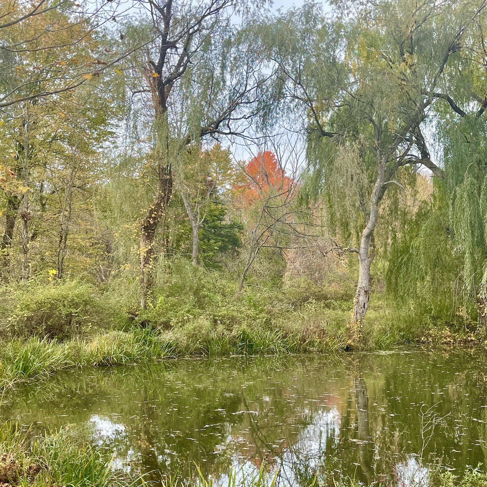
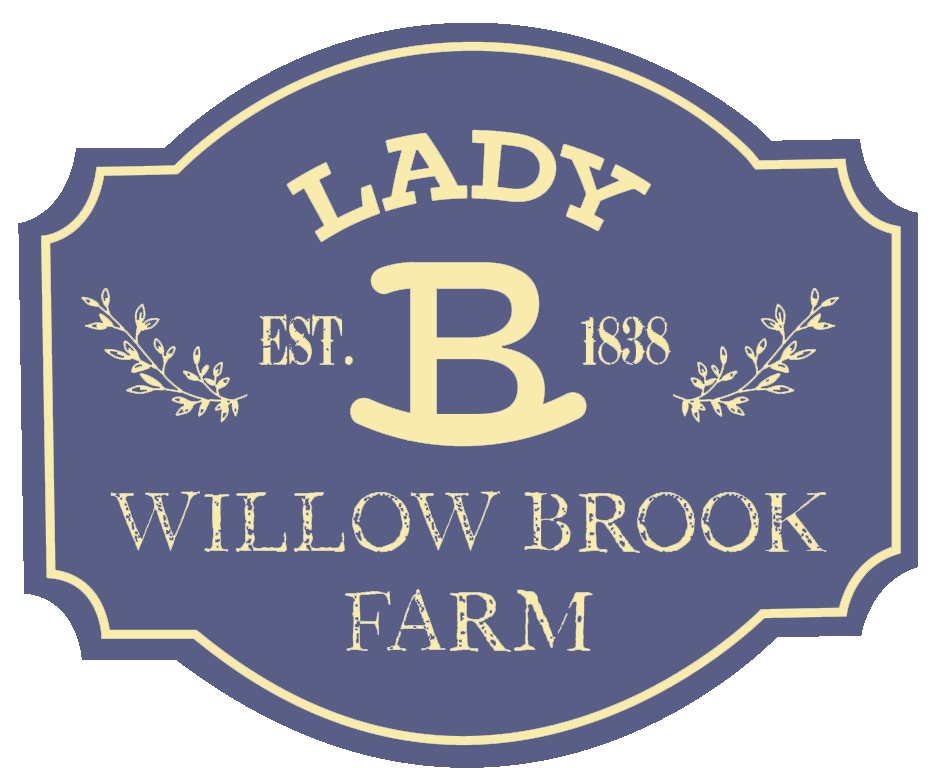
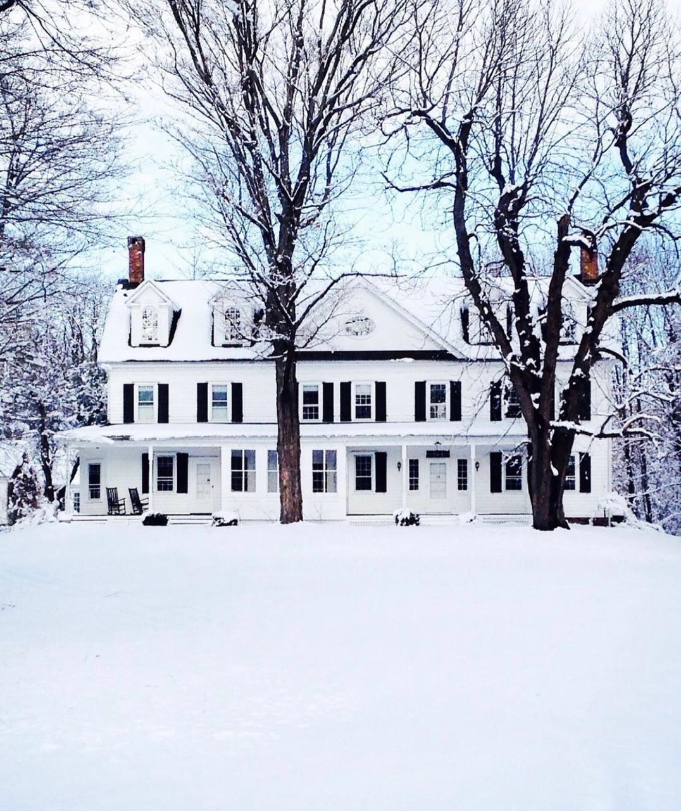
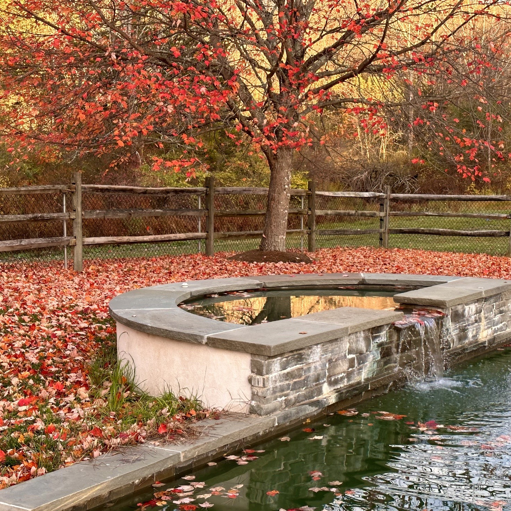
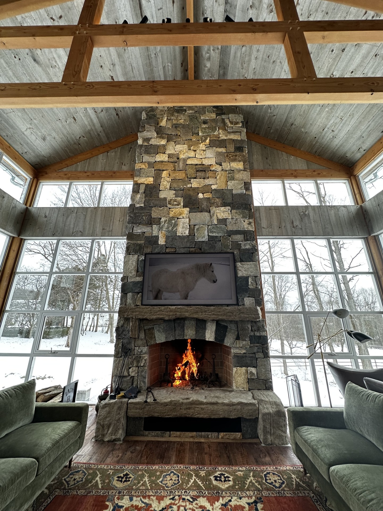

A family farm retreat in the Hudson Valley
Where willows edge the brook
Est. 1838
Lady B Willow Brook Farm has stood in the Hudson Valley since 1838. It is a working family farm and, more than that, the place our family returns to — for the quiet, the seasons, and the work of the land.
Read the story

